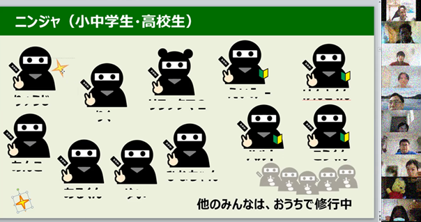
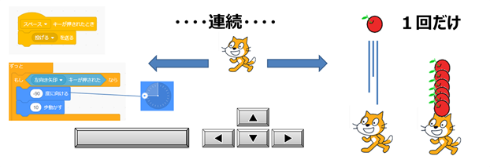
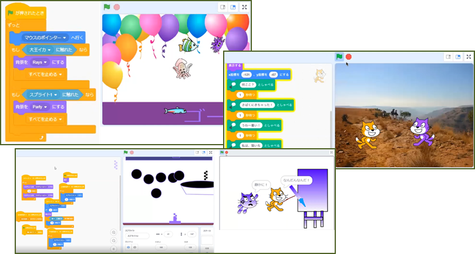
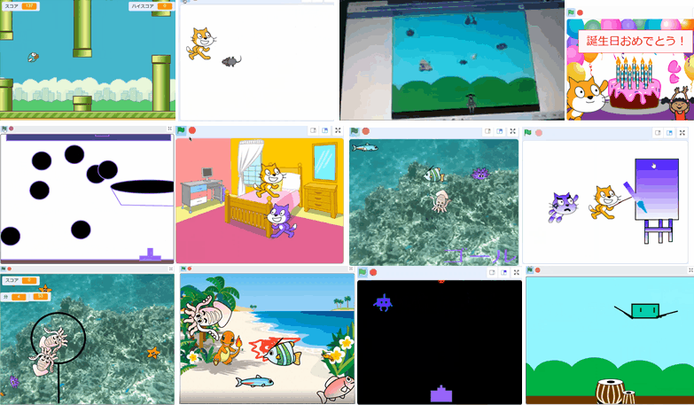
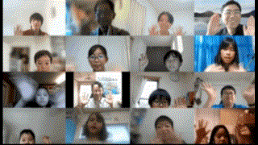

記念すべき10回目の開催は、なんと、ニンジャ10名と高校/大学から社会人のメンター6名が参加してくれました。みんなの好きなテーマで３つのグループに分かれて作品作りを通してプログラミングを学習します。第一グループは「みんなで共通のテーマで作品をつくろう」、第二グループは「自分のテーマで作品づくり」、第三グループは「初心者コース」です。今回のCoderDojo青梅に初めて参加してくれたニンジャは4名！入門ありがとう。
今日も参加してくれた7名のニンジャと、はじめて青梅Dojoに来てくれた3名のニンジャ(1名だけ参加できなかったかな)。出席者に手裏剣のマークをして、ブレークアウトルームの部屋割りとメンターのアサインをお願いしました。

キャラクタを左右に動かすとき、キーボード操作のプログラムは「キーが押されたとき」と「キーを調べる」のどちらを使っていますか？と聞いてみるとちょうど、半分ずつくらい。何がどう違うのか、そしてどんな時に使うべきかを考えてみました。
そして本当はここで誕生日サプライズお祝いのために作った「キー操作」でのScratchプログラミングを、誕生日の子に操作してもらうはずが、すっかり忘れてて、次のワークショップを開始してしまった凡ミス。あとで思い出したので作品発表のときに、「キー操作を検証してもらう」名目で、キャラクタを移動したり、ジャンプしたり、操作をして誕生日メッセージの箱を開けてもらいました😂。

自分のテーマで作品づくりは、IT業界の定番、もくもく作業を。未経験者/入門者にはメンターが手厚くサポートして、中級以上からはScratchプログラミングの質問を待って、一緒に解決する流れです。Scratch２回目の初級ニンジャは「海のいきもの」イラストを使った「ネコ逃げ」じゃなくて「大王イカ逃げ」ゲームを作ってくれました。

「それでは最初に発表したいひと～？」、さささっ、と4名のニンジャが素早く手をあげてくれました。すごい積極的な発表をありがとう。最初のニンジャはストリートファイター系のアクションゲームで完成度の高い作品に一同びっくり。次の発表からは自宅でも制作してきた作品の発表会に。ストーリーのあるアニメーションが２つ続き、「え。第五話から紹介なの？じゃあ、あとで１～４話もみなきゃ」とか、みんな面白がっていましたね。そしてここに（↓）みんなの作品を並べてみると、ゲームセンターのように賑やかで楽しい発表会だったことが伝わるといいなーと思います。

みんな明るく元気に手を振ってくれました。新型コロナが落ち着いたら、会場でイベント開催してみんなに会いたいです。
